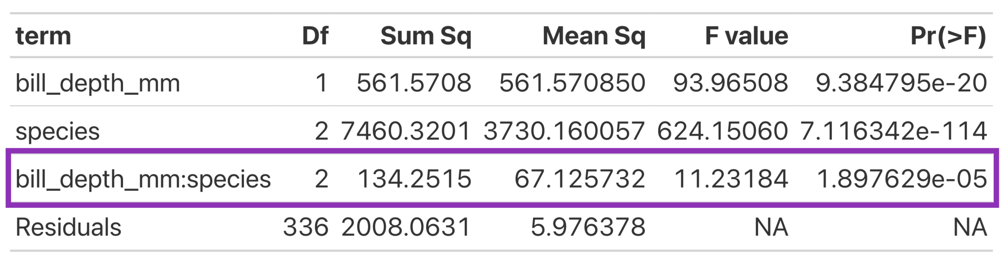

species_lm <- lm(bill_length_mm ~ bill_depth_mm * species,
data = penguins)One-way ANOVA & Multiple Linear Regression
Upcoming Deadlines
- Lab 6 revisions are due on Friday (May 23)
- Lab 4 second revisions are due on Friday (May 23)
- Lab 7 revisions will be due on Friday (May 30)
Revision Deadlines
If you did not submit revisions by the deadline (or forgot to include your reflections), your assignment is not eligible for additional revisions.
Statistical Critique 2 (Due Tuesday at 8am)
First Steps
- Open the directions!
- Copy the Statistical Critique template on Posit Cloud
- Copy-and-paste code from your Midterm Project
- Insert the package to load in your data
- Insert the code to make the plots
- Copy-and-paste your justification for why you chose the model you chose
Next Steps
- Fit the most complex model
- Obtain an ANOVA table of your model
- Use the p-values in the ANOVA table to decide what model is “best”
What is the “most complex” model?
Fit the different slopes (interaction) model

Get the ANOVA table
| term | Df | Sum Sq | Mean Sq | F value | Pr(>F) |
|---|---|---|---|---|---|
| bill_depth_mm | 1 | 561.5708 | 561.570850 | 93.96508 | 9.384795e-20 |
| species | 2 | 7460.3201 | 3730.160057 | 624.15060 | 7.116342e-114 |
| bill_depth_mm:species | 2 | 134.2515 | 67.125732 | 11.23184 | 1.897629e-05 |
| Residuals | 336 | 2008.0631 | 5.976378 | NA | NA |
Look at the Interaction Line of the ANOVA Table
F)'. The interaction term 'bill_depth_mm:species' is highlighted with a purple border. It has 2 degrees of freedom, a sum of squares of 134.2515, a mean square of 67.125732, an F value of 11.23184, and a p-value of 1.897629e-05. The interaction is statistically significant." class="r-stretch">How do I know what model is “best”?
F)'. The interaction term 'bill_depth_mm:species' is highlighted with a purple border. It has 2 degrees of freedom, a sum of squares of 134.2515, a mean square of 67.125732, an F value of 11.23184, and a p-value of 1.897629e-05. The interaction is statistically significant." class="r-stretch">The interaction line of the ANOVA table is testing:
\(H_0\): the slopes for the relationship between bill length and bill depth is the same for all Gentoo, Adelie, and Chinstrap penguins
\(H_A\): the slopes for the relationship between bill length and bill depth is different for at least one species of penguin
How do I know what model is “best”?
bill_depth_mm:species: With a p-value of 0.0000189, I would reject the null hypothesis (that the slopes are all the same) and I would conclude that there is evidence that the slopes are different!
What if I got a “large” p-value?
Suppose, the p-value for bill_depth_mm:species was 0.45.
What model would be “best” in this scenario?
Do you have to use an ANOVA to test for different slopes?
Do you have to use an ANOVA to test for different slopes?
No! Only if you have 3 or more groups!
Week 9 - Final Project Week
Week 9 - Final Project Week
Complete these steps before Tuesday’s class to be prepared!
Step 1: Use the same dataset?
Yes
- Choose one numeric response variable
- Choose two categorical explanatory variables
- Learn about how these variables were collected / recorded
No
- Find a new dataset from the list of datasets.
- Learn about the dataset!
- Choose one numeric response variable
- Choose two categorical explanatory variables
- Learn about how these variables were collected / recorded
Step 2: Write Your Introduction
Your Introduction should at a minimum address the following questions:
- Who collected the data?
- How were the data collected?
- When were the data collected?
- Why were the data collected?
- What question do these data address?
Research Question
You can hold off on a research question until we learn more about ANOVA next week!
Step 3: Make a Copy of the Final Project Template
This will be posted by Friday!
Step 4: Pick out a Poster Template
These will be posted by Friday!
Lab 8

What is the relationship between life expectancy and GDP per capita?
- Decide on a variable transformation
- Assess model conditions (L, I, N, E)
- Compare hypothesis test results between simulation-based methods and theory-based methods
Accessing Lab 8
Step 1: One member of your group needs to follow these instructions to copy the Lab 8 project into your group’s workspace
Step 2: Both members open the Lab 8 assignment in your group workspace!
Step 4: Follow the final instructions to activate collaborative editing in the document.
Source Editor
You need to be in the source editor (not the pretty one) to use collaborative editing!
Roles
You will be trading off roles in the middle of the lab! One person will do the model condition coding and one person will do the hypothesis test coding!